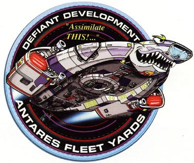
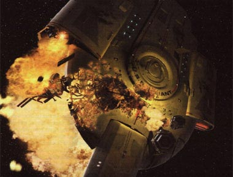
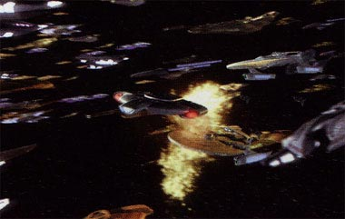

|
Tudo sobre a estao espacial Deep Space Nine e toda a
tecnologia que permeia o sculo 24 voc aprende por aqui.

|
USS Defiant (NX-74205)
A USS Defiant NX-74205 foi um prottipo para uma nova classe de naves de escolta, a classe Defiant. Seu desenvolvimento foi iniciado em 2366 como uma pequena e fortemente armada nave que seria utilizada para defender os planetas da Federao de possveis ataque dos Borgs, como os ocorridos em Wolf 359. A Defiant seria a primeira da Frota de batalha da Federao. Porm, como uma possvel ameaa Borg no ocorreu, o projeto foi deixado de lado.  Em 2370, com uma nova ameaa a Federao, os Jem'Hadars, a USS Defiant foi designada para a estao Deep Space Nine, sob comando do ento comandante Benjamin Sisko, promovido a capito mais adiante. A nave era equipada com um sistema de camuflagem emprestado pelos Romulanos em troca de todas as informaes que a Federao tinha do Dominion, a organizao por trs dos soldados Jem'Hadars. Porm o acordo previa que o sistema de camuflagem somente poderia ser usado no quadrante Gama, o que de fato aconteceu at o incio da guerra Dominion, em 2372. A partir da a camuflagem da Defiant foi utilizada em qualquer lugar, seja quadrante Alfa, Beta ou Gama. Em 2373, com uma nova ameaa Borg ao quadrante Alfa, a Defiant, sob comando do tenente-comandante Worf, quase foi destruda enquanto lutava junto com uma frota de naves para defender a Terra de um cubo Borg. A nave acabou sendo destruda para valer em 2375 pelos Breen, em uma das ofensivas finais ao Dominion.  Algumas semanas depois a USS Sao Paulo, uma nave exatamente igual destruda, foi enviada Deep Space Nine para substitu-la, sendo rebatizada de Defiant. Com ela frente, a fora-tarefa da Federao enviada Cardassia conseguiu pr um fim na guerra, terminando com um dos mais sangrentos perodos da histria da Federao.  |